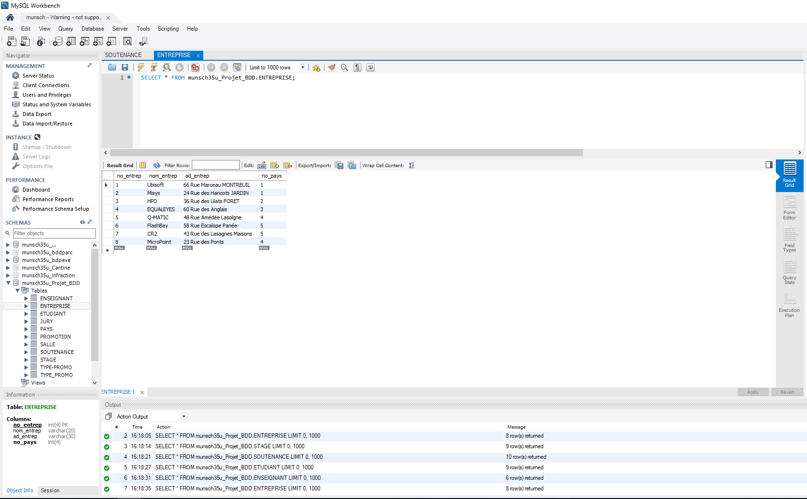

Durant le DUT informatique les étudiants seront ammenés à travailler sur des bases de données , elles sont utilisées dans un grand nombre d'entreprise pour stocker, organiser et analyser les données . Appelé aussi BdD,celle-ci est une collection d'informations organisées afin d'être facilement consultables , gérables et mises à jour. A l'université nous travaillons sur des BdD et nous effectuons des requêtes à l'aide d'arbre que nous traduisons ensuite en requête SQL où celui-ci est un language informatique normalisé servant à exploiter des bases de données relationnelles.
Le projet a été constitué en 2 parties , la première partie concernait uniquement pour le premier semestre constituait à créer une base de donnée. Celle-ci a été à l'aide du SGBD mySQL installé et utilisable dans les salles du département Informatique de l'IUT de Metz. Suite à cette base créée des requêtes ont du être réalisé et les résultats obtenus de celle-ci on du être affichées . Dans la continuité du projet la partie du 2 de celui-ci a été donné au deuxieme semestre , dans cette deuxieme partie il n'était question cette fois-ci que de requêtes. Ce projet formé en 2 parties a du être réalisé par groupe de 2 personnes. Nous disposions d'une période d'un peu près 1 mois pour cette partie et en il était de même pour la deuxième.
Exemple de la table entreprise
